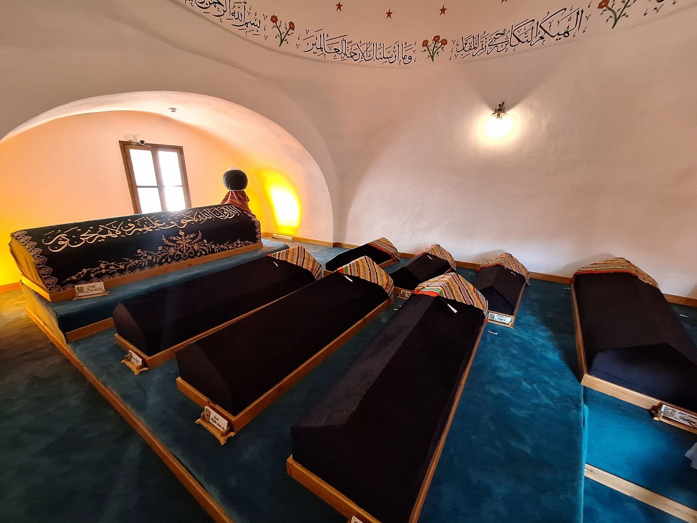
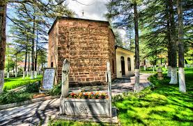
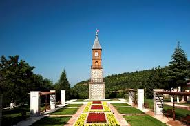

Bilecik, sadece bir şehir değil, bir cihan imparatorluğunun doğduğu topraklardır. Bu kadim şehrin taşı toprağı, tarihin derin izlerini taşır. İşte şehrimizin en önemli kültürel miraslarından bazıları:

Şeyh Edebali, Osmanlı Devleti'nin manevi kurucusu, Osman Gazi'nin kayınpederi ve hocasıdır. Bilecik merkezde bulunan türbesi, şehrin en çok ziyaret edilen tarihi mekanıdır.
Rivayete göre Osman Gazi, o meşhur rüyasını (göğsünden çıkan ağacın tüm dünyayı kaplaması) bu mekanda görmüş ve Osmanlı'nın cihan devleti olacağının müjdesini almıştır.

Osmanlı İmparatorluğu'nun kurucusu Osman Gazi'nin babası olan Ertuğrul Gazi'nin türbesi, Bilecik'in Söğüt ilçesinde yer almaktadır. Kayı Boyu'nun lideri olarak bu topraklara yerleşmiş ve devletin temellerini atmıştır.
Her yıl eylül ayının ikinci haftasında Söğüt'te düzenlenen "Ertuğrul Gazi'yi Anma ve Yörük Şenlikleri", Türkiye'nin dört bir yanından gelen yörükleri ve ziyaretçileri ağırlar. Türbe, mimarisi ve manevi atmosferiyle görenleri büyüler.

II. Abdülhamit'in tahta çıkışının 30. yılı anısına 1907 yılında yaptırılan Saat Kulesi, şehrin merkezindeki en ikonik yapılardan biridir.
Dört cepheli ve dört katlı olan kule, kesme taştan inşa edilmiştir. Şehrin siluetini süsleyen bu zarif yapı, Osmanlı'nın son dönem sivil mimari örneklerinden biri olarak günümüze kadar sapasağlam ulaşmayı başarmıştır.